资源
正文
0 抠图分析
对象图形
- 规则图形
- 不规则图形
颜色分析
- 颜色分明
- 轮廓清晰
- 色彩不分明
1 选框抠图⭐
作用
- 抠方形内容
- 快速画选区
操作
- 框选：鼠标左键
- 正方形选区：
Shift - 中心绘制：
Alt - 中心等比绘制：
Shift+Alt
选取调整
-
加选：
Shift -
减选：
Alt -
交叉选取：
Shift+Alt -
羽化：
Shift+F6 -
移动选区：
空格 -
调整选区（适用所有选区）：
-
变换选区（矩形边框 + 斜切的变换得到任意四边形的选区）
-
修改选区
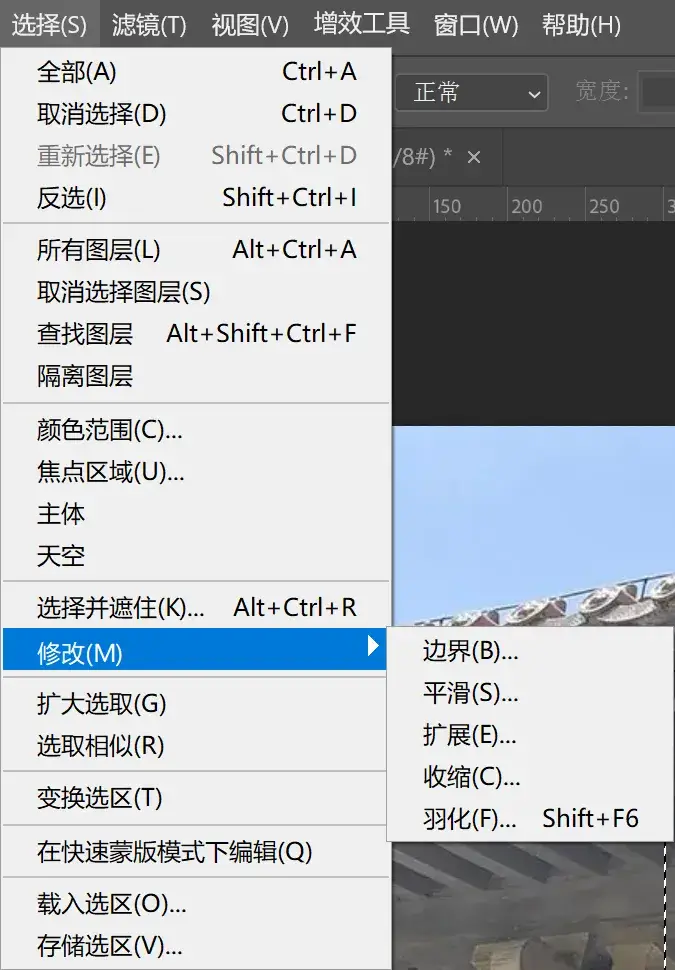
-
取消选区：
Ctrl+D
-
-
复制选取内容（通过拷贝的图层）：
Ctrl+J
Alt + Ctrl + G 可以置入图层。
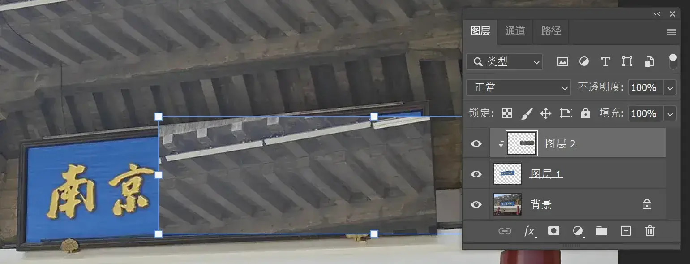
2 快速选择工具⭐⭐⭐
作用
- 快速选择并建立选区
- 适合不规则物体，但是轮廓明显
操作
- 调整画笔大小（画笔大小略小于选取物体的大小）：
Alt+鼠标右键，移动鼠标（上下移动调整硬度，左右移动调整大小）
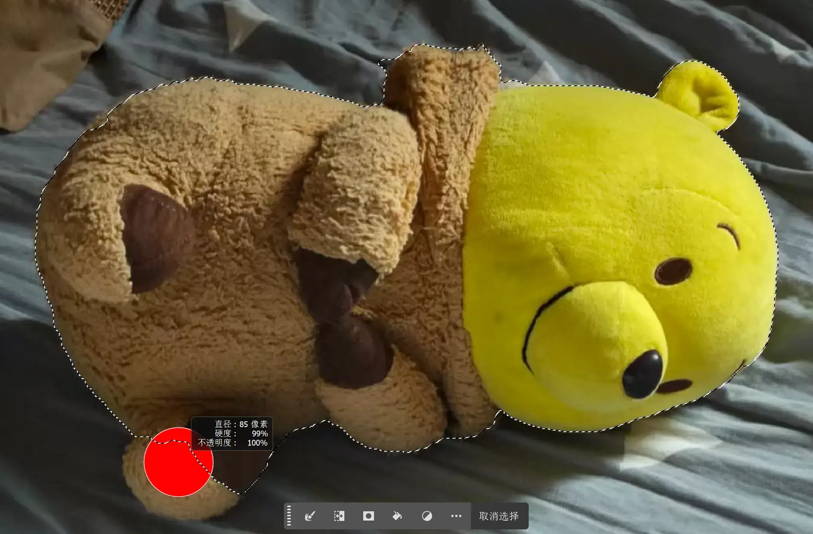
优缺点
- 优点：抠图快速，效率高
- 缺点：抠图的准确度不够
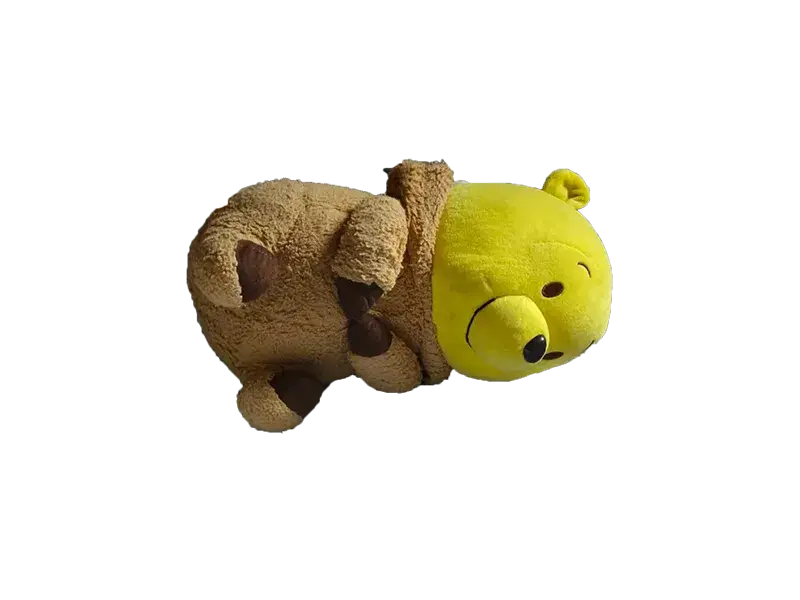
3 魔棒抠图⭐⭐⭐
作用
- 快速选择相近的颜色
- 适合主体和背景颜色区别较大的图片
操作
- 调整容差：可以理解为调整颜色的范围
- 确定是否勾选连续
- 选区调整
优缺点
- 优点：抠图快速、效率高
- 对图片要求高，背景或主体颜色比较统一
4 对象选择⭐⭐⭐
作用
- 快速选择图片中个体
- 适合个体轮廓清晰的图片
操作
- 选择对象
N键预览对象- 预览中的可以直接点击
- 无法预览的可以直接框选
- 选区调整
优缺点
- 优点：系统自动判断对象，效率高
- 缺点：不太智能，精确度不够
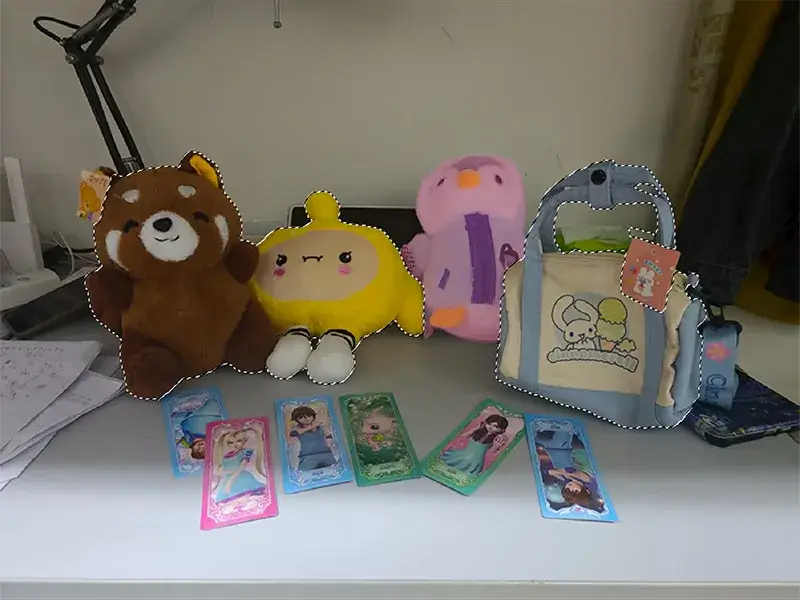
Photoshop 的 对象选择工具背后依赖的是 Adobe Sensei 的深度学习图像分割模型（核心是 CNN/深度学习）。
5 套索工具⭐⭐
作用
- 快速创建不规则选区
- 适合抠取要求不高的图片
操作
- 直接套取
- 选区调整
优缺点
- 优点：快速灵活地建立选区
- 无法精确抠图
6 多边形套索⭐
作用
- 建立直边形的选区
- 适合轮廓为规则的直边图片
操作
- 沿边缘建立选区
- 建立闭合选区
- 单击起点
- 直接双击
- 选区调整
优缺点
- 优点：选区建立较灵活
- 缺点：适用范围比较窄（我不这么认为）
7 磁性套索⭐
作用
- 创建对象边缘比较统一的选区
- 适合主体边缘统一的图片、
操作
- 沿着主体边缘移动，创建选区
- 调整宽度、对比度和频率
- 选区调整
- 优点：无
- 缺点：不实用
8 橡皮擦⭐⭐
作用
- 直接擦除图片像素，或者填充背景色
- 适合要求不太高的图片
操作
- 选择背景色
- 填充背景色或者擦除不需要的像素
优缺点
- 优点：功能简单粗暴
- 缺点：适用范围小
按住 Alt 变成 历史记录橡皮擦。
9 魔术橡皮擦⭐⭐
作用
- 快速擦除颜色相近的内容
- 适合主体和背景颜色区别较大的图片
操作
- 调整容差：可以理解为调整颜色的范围
- 确定是否勾选连续
优缺点
- 优点：一键操作
- 缺点：局限性大
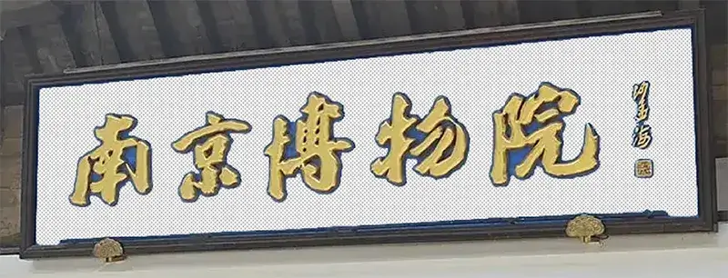
感觉就是带魔棒的橡皮擦……
10 背景橡皮擦⭐⭐
作用
- 擦除颜色相近的背景
- 适合主体和背景颜色区别较大的图片
操作
- 选择一次取样
- 确定是否连续
- 更换样本颜色进行擦除
优缺点
- 优点：背景去除快速
- 缺点：局限性大（渐变等复杂背景就歇菜）
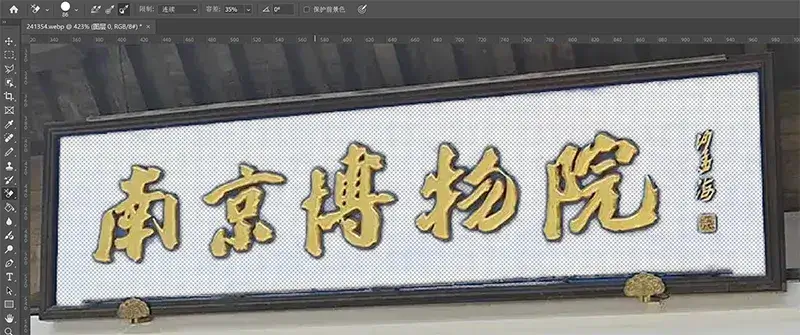
选择取样方式（Sampling）
- 连续 (Contiguous)：只擦掉相邻区域的相似颜色。
- 不连续 (Discontiguous)：全图中所有相似颜色都会被擦掉。
- 取样一次 (Once)：只取样第一次点击时的颜色。
- 取样背景色 (Background Swatch)：以当前背景色为取样基准。
设置限制（Limits）
- 连续 (Contiguous)：仅擦掉相连的区域。
- 不连续 (Discontiguous)：不相连的相似颜色也会被擦掉。
- 边缘查找 (Find Edges)：边缘保留更锐利，适合主体轮廓复杂的情况。
调整容差（Tolerance）
- 控制相似颜色的范围（0–100）。
- 数值小：只擦掉和采样颜色非常接近的像素。
- 数值大：会擦掉更宽泛的颜色范围。
保护前景色（Protect Foreground Color）
- 勾选后，会保护前景色（工具栏下方设置的前景色），避免被误擦。
11 选择并遮住⭐⭐⭐⭐
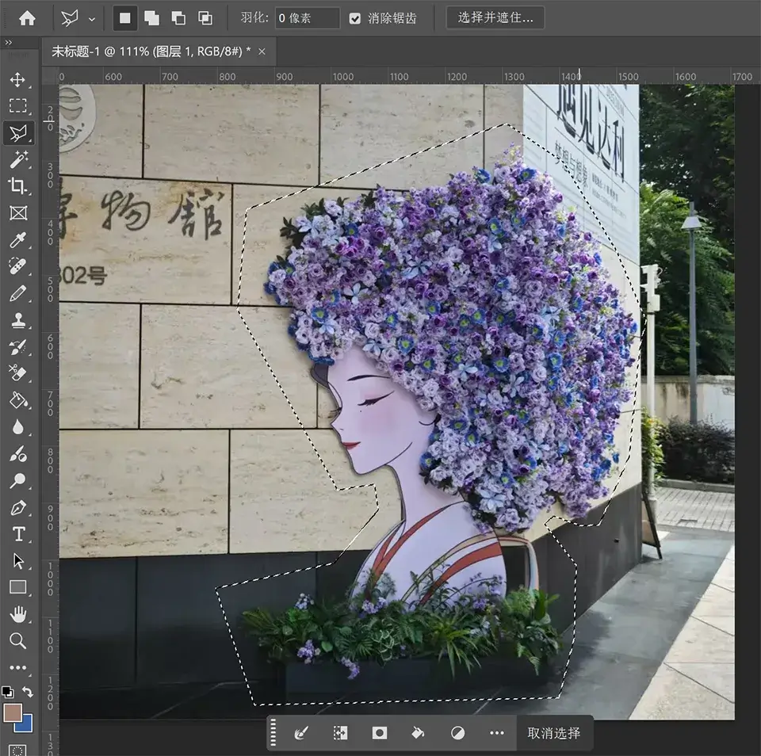
先勾勒出大致范围，然后选择 选择并遮住...。
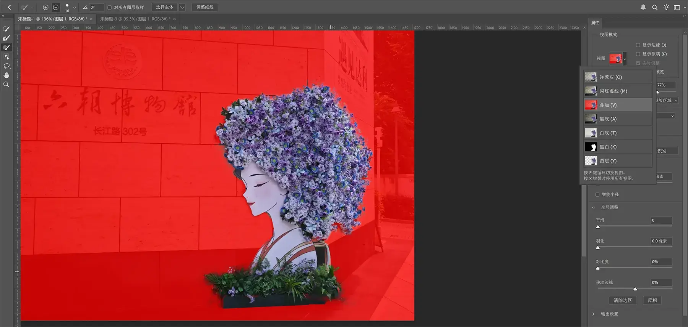
通过调整视图和画笔，不断精细边缘。
一阵操作！
作用
-
精准抠取毛发类的图片
-
适合主体明显，但是细节较多的图片
操作
- 粗略选择主体
- 点击选择并遮住
- 调整参数
- 选择调整边缘画笔、切换视图
- 选择画笔
- 选区调整
优缺点
- 优点：抠图很干净，速度快，质量高
- 缺点：操作有点难度
12 主体抠图⭐⭐⭐
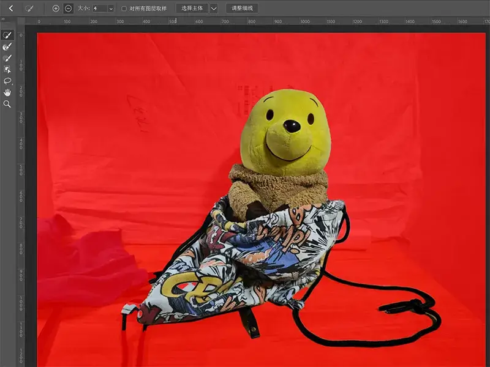
一键 选择主体。还可以和选择 选择并遮住 共用。
作用
- 快速选择主体明显的图片
- 适合主体清晰、杂质较少的图片
操作
- 选择-主体
- 选区调整
优缺点
- 优点：效率高，一键操作
- 缺点：对图片要求高
13 钢笔抠图⭐⭐⭐⭐⭐
作用
- 精准扣取边缘较硬的对象
- 适合要求精细、边缘生硬的图片
操作
- 路径绘制
- 直线绘制：直接拖拉
- 曲线绘制
- 添加锚点拖动（单边手柄 / 两边手柄）
Alt键控制：单击锚点控制有无、长短、方向Ctrl键控制：方向、单边长短，选择手柄
- 移动锚点
Ctrl拖动锚点移动- 空格拖动
- 添加锚点拖动（单边手柄 / 两边手柄）
- 路径调整
- 锚点控制：增加/删除锚
- 曲线锚点：断开与重新连接
Ctrl+ 单击空白 → 断开Ctrl+ 单击锚点 → 再单击 → 重新连接
- 路径控制：
Ctrl拖动
- 选区调整
Ctrl+ 回车 → 创建选区- 蒙版：矢量蒙版
- 其他功能
- 形状：形状工具调整
- 多重路径：同时绘制路径 / 先建立选区再添加路径
优缺点
- 优点：抠图灵活精准
- 缺点：操作有一定难度
14 通道抠图⭐⭐⭐⭐
作用
- 利用主体和背景颜色差异进行抠图
- 适合主体和背景亮度、颜色差异较大的图片
操作
-
对比各通道主体和背景差异，选择差别最大的通道复制
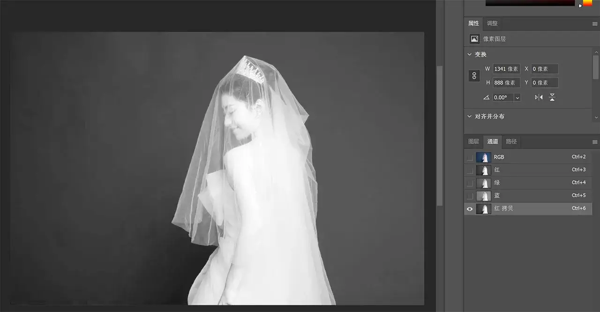
-
选择色阶，继续将背景和主体反差变大
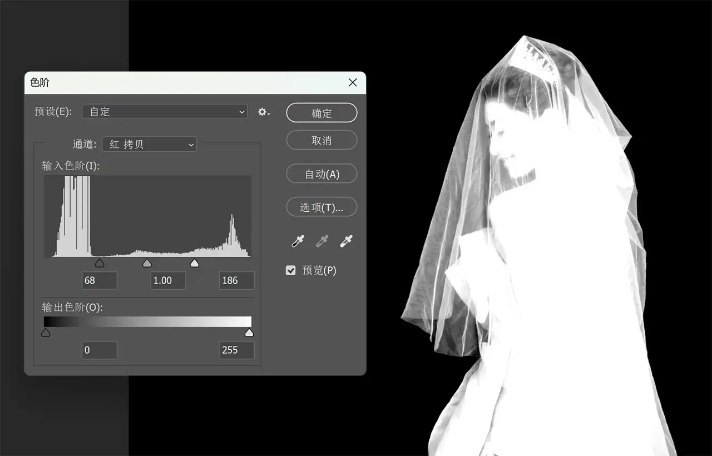
-
用画笔将主体需要抠出的部分擦边
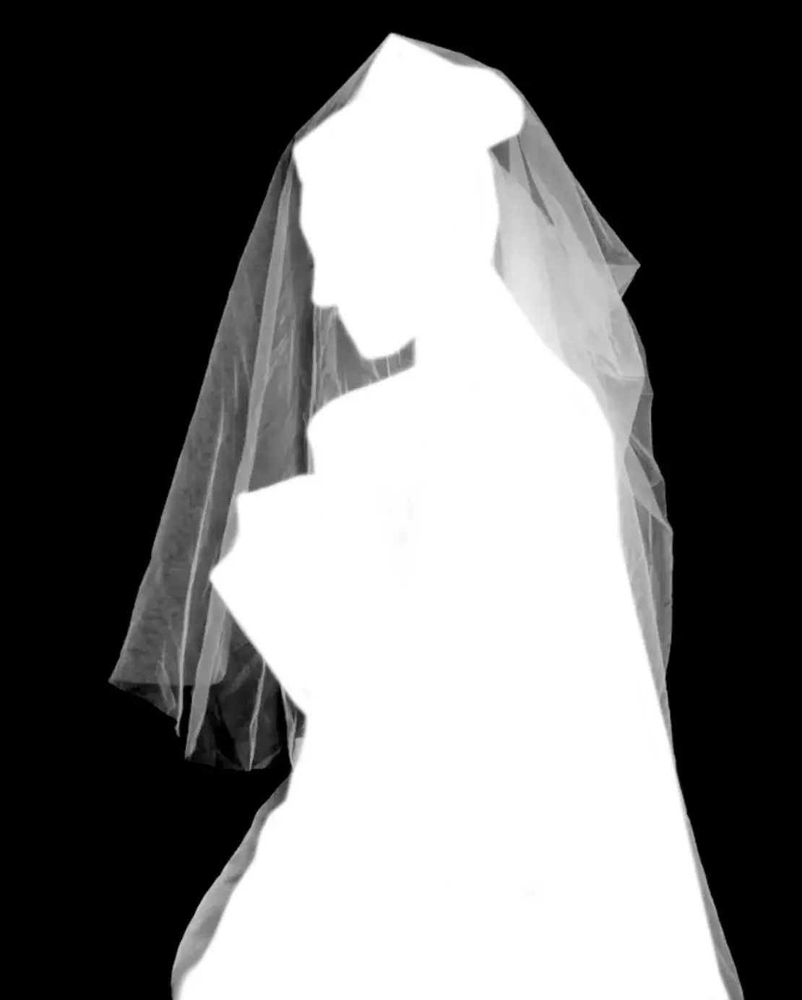
-
调出选区（
Ctrl+鼠标左键红色通道）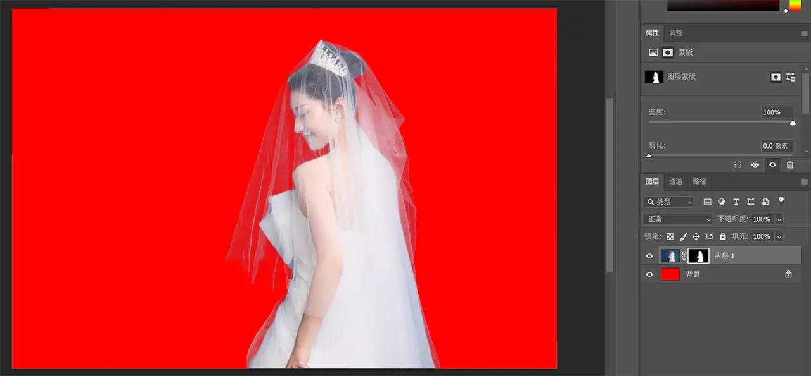
优缺点
- 优点：抠图精准
- 缺点：有一定操作难度
15 蒙版抠图⭐⭐⭐⭐
作用
- 适合主体边缘复杂的图片
操作
- 观察边缘特征
- 添加蒙版，用画笔沿边缘涂抹
- 用钢笔工具沿着画笔涂抹部分勾勒
优缺点
- 优点：能抠比较复杂的图片
- 缺点：需要一定的耐心、细心
16 色彩范围⭐⭐⭐
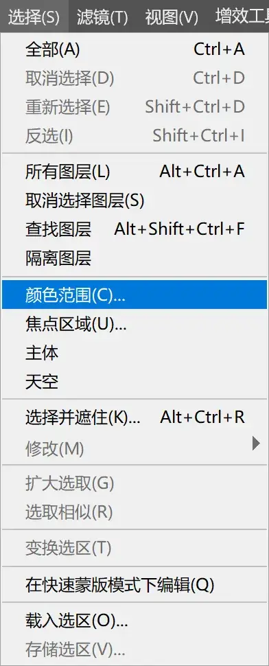
作用
- 抠取颜色或者背景比较统一的图片
- 适合主体和背景颜色区别较大但是边缘存在透明的图片
操作
- 吸管吸取主体或背景
- 调整范围和容差
- 选区调整
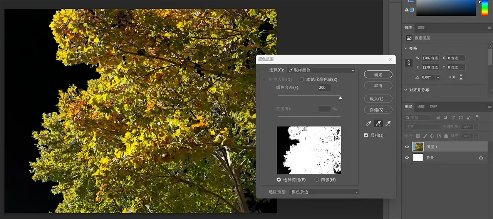
优缺点
- 优点：操作简单，抠图快速
- 缺点：抠出的图片不太干净